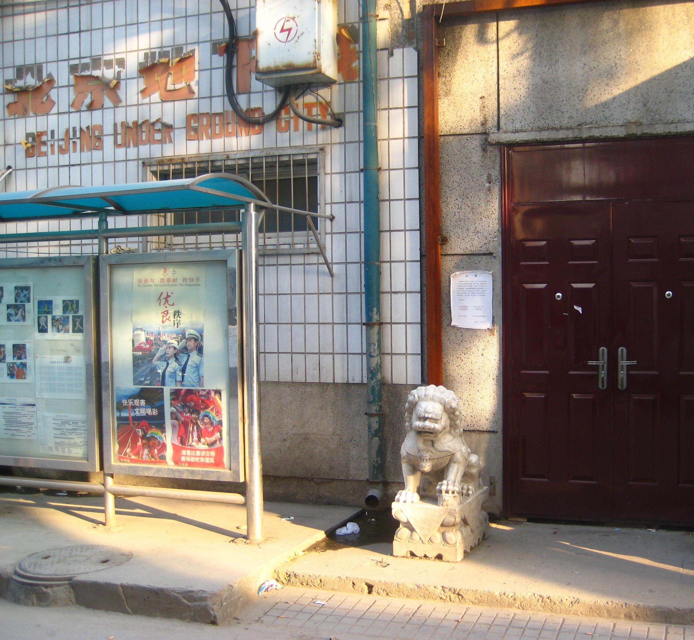
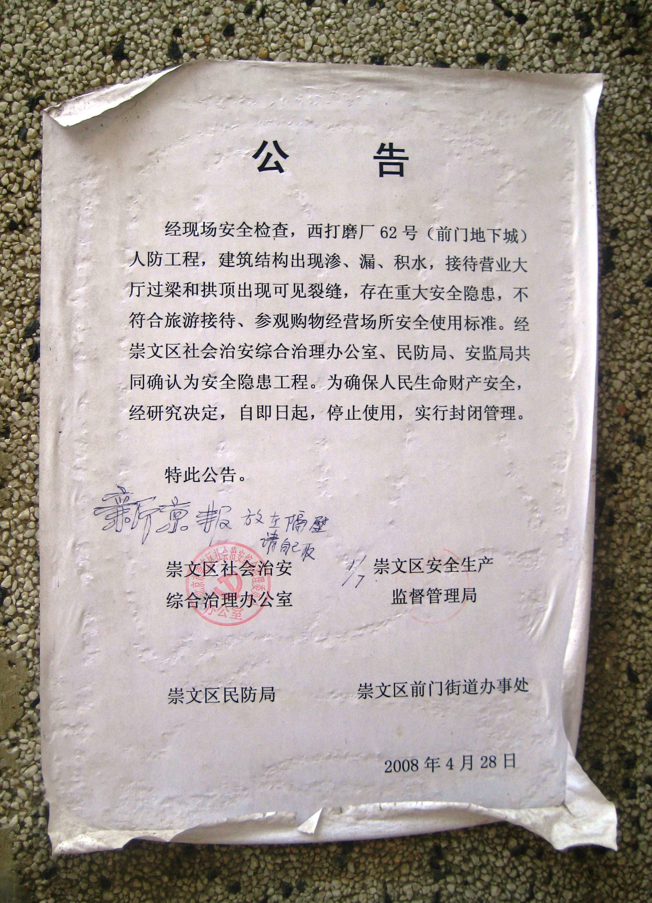

Introduction
The Underground City (Chinese: 地下城; pinyin: Dìxià Chéng) is a Cold War-era bomb shelter consisting of a network of tunnels located beneath Beijing, China. It has also been referred to as the Underground Great Wall, since it was built for the purpose of military defense. The complex was constructed from 1969 to 1979 in anticipation of a nuclear war with the Soviet Union, as Sino-Soviet relations worsened, and it was officially reopened in 2000. Visitors were allowed to tour portions of the complex, which has been described as "dark, damp, and genuinely eerie". The Underground City has been closed for renovation since at least February 2008.

Location
The tunnels of the Underground City run beneath Beijing's city center, covering an area of 85 square kilometres (33 sq mi) 8 to 18 metres (26–59 ft) under the surface. At one time there were about 90 entrances to the complex, all of which were hidden in shops along the main streets of Qianmen. Many of the entrances have since been demolished or blocked off for reconstruction. Known remaining entrances include 62 West Damochang Street in Qianmen, Beijing Qianmen Carpet Factory at 44 Xingfu Dajie in Chongwen District, and 18 Dashilan Jie in Qianmen.
History
At the height of Soviet–Chinese tensions in 1969, Chinese Communist Party chairman Mao Zedong ordered the construction of the Underground City during the border conflict over Zhenbao Island in the Heilongjiang River. The Underground City was designed to withstand nuclear, biochemical and conventional attacks. The complex would protect Beijing's population, and allow government officials to evacuate in the event of an attack on the city. The government claimed that the tunnels could accommodate all of Beijing's six million inhabitants upon its completion.
The complex was equipped with facilities such as restaurants, clinics, schools, theaters, factories, a roller skating rink, grain and oil warehouses, and a mushroom cultivation farm. There were also almost 70 potential sites where water wells could easily be dug if needed. Elaborate ventilation systems were installed, with 2,300 shafts that can be sealed off to protect the tunnels' inhabitants from poison gases, Gas- and water-proof hatches, as well as thick concrete main gates, were constructed to protect the tunnels from biochemical or gas attacks and nuclear fallouts.
There is no official disclosure about the actual extent of the complex, but it is speculated that the tunnels may link together Beijing's various landmarks, as well as important governmental buildings such as the Zhongnanhai, the Great Hall of the People, and even military bases in the outskirts of the city. The China Internet Information Center asserts that "they supposedly link all areas of central Beijing, from Xidan and Xuanwumen to Qianmen and [the] Chongwen district", in addition to the Western Hills. It is also rumoured that every residence once had a secret trapdoor nearby leading to the tunnels. In the event of a nuclear attack, the plan was to move half of Beijing's population underground and the other half to the Western Hills.
The tunnels were built by more than 300,000 local citizens, including school students, on volunteer duties. Some portions were even dug without the help of any heavy machinery. Centuries-old city walls, towers and gates, including the old city gates of Xizhimen, Fuchengmen, and Chongwenmen were destroyed to supply construction materials for the complex.
Since the complex's completion, it has been utilized by locals in various ways as the tunnels remain cool in summer and warm in winter. On busy streets, some portions of the complex were refurbished as cheap hotels, while others were transformed into shopping and business centers, or even theaters.
While the complex has never been used for its intended purpose, it has never been fully abandoned either. Local authorities still perform water leakage checks and pest control in the tunnels on a regular basis.

Tourist Attraction
The complex was officially opened in 2000, but has been closed for renovation since at least February 2008. While it was open, visitors were allowed to tour portions of the complex; the Underground City was popular with foreign tourists but slowly became uninteresting to local citizens. Though there are many other entrances, foreign visitors entered approved sections accessed via a small shop front in Qianmen, south of Tiananmen Square, at 62 West Damochang Street. Tour groups could enter free of charge and without prior permission while individual tourists not part of a group were charged 20 yuan (US$2.40) each. Although tours aren't offered, private tours can still be found viewing the surroundings.
The official tour took visitors only on a small circular stretch of the Underground City. Inside the complex, visitors could see signposts to major landmarks accessible by the tunnels, such as Tiananmen Square and the Forbidden City, and could see chambers labeled with their original functions, such as cinemas, hospitals, or arsenals. A portrait of Mao Zedong could be seen amidst murals of locals volunteering to dig the tunnels and fading slogans such as "Accumulate Grain", and "For the People: Prepare for War, Prepare for Famine". Rooms with bunk beds and decayed cardboard boxes of water purifiers could be seen in areas not open to tourists. Visitors on the official tour would also pass by a functioning silk factory in one of the underground staff meeting rooms of the complex, and be given a demonstration of the process of obtaining silk from silkworm cocoons. They had a chance to buy souvenirs at a tourists' shop operated by the state-owned Qianmen Arts and Crafts Center and the China Kai Tian Silk Company.